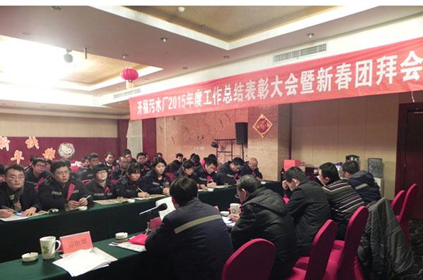

来源：鑫远水务 添加时间：2016-01-22
2016年1月22日下午，开福污水处理厂2015年度总结表彰大会在顺天黄金海岸大酒店207厅召开，会议由生产技术部副部长徐曙音主持，集团总裁助理许明德等领导出席会议，开福污水处理厂全体员工参加了会议。
会上，副厂长赖长清作《开福污水厂2015年度工作总结及2015年工作计划安排》报告，回顾了2015年度主要工作，阐述了2016年计划工作，号召水厂全体员工齐心协力，克服困难，既要保证水厂一期正常稳定运行，又要全力完成二期提标扩建任务，同时紧紧围绕公司的计划目标任务，奋勇争先创造新的佳绩。随后，厂长罗弢宣读2015年度优秀个人与先进班组表彰决定，并为获奖者颁发奖状。优秀员工代表——化验班姜欢代表获奖者发言，表明为水厂发展做出新贡献的信心与决心；维修班黄民彬作为新员工代表发言，他用自己的实际行动启示大家，诚信做人，踏实做事，认真做好本职工作；运行班班长寻芳荣作为先进班组代表发言，鼓励大家努力学习，突破自己，向更高的人生目标迈进。
最后，集团总裁助理许明德在会上做了重要讲话，一是充分肯定了水厂团队成绩，感谢全体员工的辛勤付出；二是期望大家加强学习，不断提高专业水平、沟通能力和综合素质，同时希望大家时刻准备着，与公司同成长，将环保板块做大做强。
总结表彰会结束后举行了新春团拜会，伴随着主持人热烈洋溢的开场晚会拉开序幕，舞蹈、小品、独唱、对唱等多种形式的表演展现了鑫远水务员工昂扬向上的精神风貌和火热激情，活动在祥和、喜庆、欢乐的气氛中结束。
